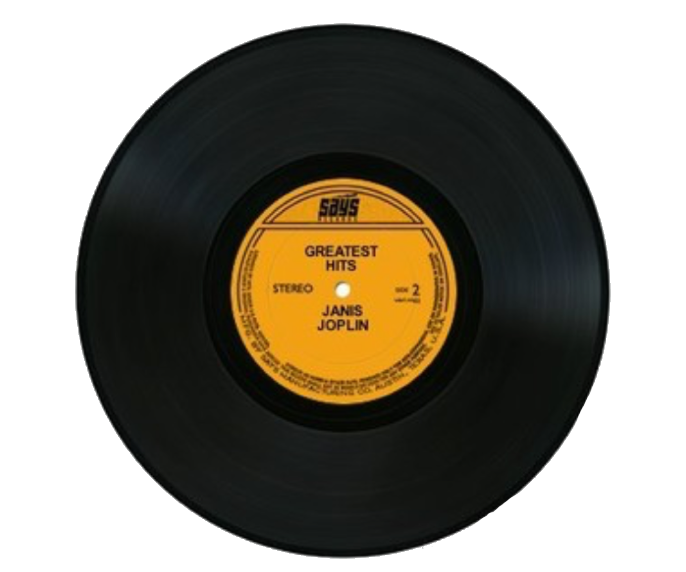

My Journey Throughout CS
Why Computer Science?
For the vast majority of my life, I have been a problem solver, whether it be through
puzzles in video games, math problems in school, to even figuring out how to build and modify my own computer.
Science and technology were always the subjects that I knew I wanted to pursue, and throughout my academic career, I never fully
explored coding or programming, but I knew I wanted to be some kind of scientist. As a child, I always enjoyed playing games on the family computer,
and then eventually my own gaming systems, which further fueled my love for the internet and technology. And so, when it came time to decide what I wanted
to study in college, I figured that Computer Science could be my path.
My first experience with Computer Science at a serious level was in college, in my Intro to Computer Science 1 course.
I was immediately hooked. Getting my code to work, solving problems that felt like logic puzzles, all the while furthering my proficiency with
math comcepts such as Calculus and Discrete Mathematics, I knew that this was the path for me.
My second computer science course, Intro to Computer Science 2, further solidified my love for the subject, although it was not free of its challenges.
Moving from a language like Python to Java was a big change, and I struggled with the syntax and concepts at first. But nonetheless, I persisted, and
through hard work and dedication, I was able to overcome those challenges and excel in the course, learning complex data structures and now having a more comforable
grasp of object-oriented programming.
I am now approaching my third year of college and as I continue my path through Computer Science, I am excited to learn more about the field and explore the many opportunities it has to offer.
I am particularly interested in software engineering, web development, and artificial intelligence, and I look forward to applying my skills and knowledge to real-world projects.
I am also eager to collaborate with others and learn from their experiences, as I believe that teamwork and communication are essential skills in the tech industry. Not to mention, being Latinx,
I am passionate about promoting diversity and inclusion in the field of Computer Science, and I hope to inspire others to pursue their passions and make a positive impact in the world through technology!
My Tech Skills 💻
Programming Languages:
- Python
- Java
- HTML
- CSS
- JavaScript
- C
- Assembly
Technologies & Tools:
- Git
- React
- Pandas
- Numpy
- Matplotlib
- Flask
What I Enjoy Off the Clock
My Current Favorite Album! 💿
Some of my favortie hobbies include:
- Playing Video Games 🎮
- Listening to Music 🎵
- Crocheting Clothes 🧶
- Fashion & Personal Style 👕
Let's Connect!
Contact Information:
Phone: (413) 222-9828
Email: kevink100465@gmail.com